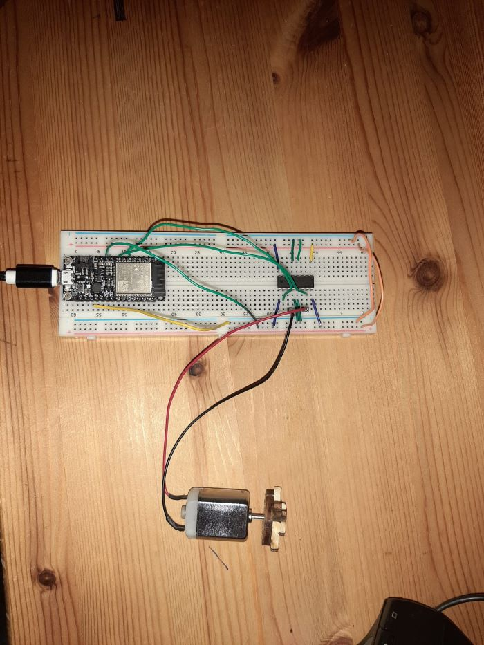

On this page you will find all the projects that I participated in with the DigiFab course. Hope you like it and Please contact
me if you have any questions or comments
ESP32
In this project we will be working on an ESP32 which is a microcontroller very similar to Arduino that can be programmed using the Arduino IDE.
What distinguishes ESP32 from Arduino is the ability to connect to the Internet (WiFi). ESP32 is used specifically for IoT projects where you need
access to the network or need to connect to external devices.
In this project, we will make the ESP32 connect to the Internet and then run a motor in two different directions through a computer or mobile
connected to the same network.
COMPONENTS AND SUPPLIES
ESP32
Motor
L293D motor driver
Jumper wires
Connecting ESP32 to the WiFi:
First, we will connect the ESP32 to the WiFi network by writing the following code. This code allowed us to connect to the WiFi network mentioned
in the code. Then the ISP32 can be a host. Where clients (other devices) can connect to it via IP address and exchange data. In this code, it will print
hello world on the client's device when the connection is made between the client and the ESP32.
L293D motor driver is a connecting device between the motor and the ESP32 to control the speed and direction of rotation
of the motor. Two motors can be connected to this circuit. But in this project we will only connect one motor. We will connect
them as shown in the picture.

Motor controller
After that, we will write the code that will connect to the Internet and control the motor from another device
#include
const char* ssid = "azeez";
const char* password = "azeez123";
const int motorIn1 = 12;
const int motorIn2 = 33;
WiFiServer server(80);
void setup() {
Serial.begin(115200);
pinMode(motorIn1,OUTPUT);
pinMode(motorIn2,OUTPUT);
delay(10);
Serial.println();
Serial.println();
Serial.print("connecting to");
Serial.println(ssid);
WiFi.begin(ssid, password);
while (WiFi.status() != WL_CONNECTED){
delay(500);
Serial.print(".");}
Serial.println("");
Serial.println("WiFi connected.");
Serial.println("IP address:");
Serial.println(WiFi.localIP());
server.begin();
}
void loop() {
WiFiClient client = server.available();
if (client) {
Serial.println("New Client.");
String currentLine = "";
while (client.connected()) {
if (client.available()) {
char c = client.read();
Serial.write(c);
if (c == '\n') {
if (currentLine.length() == 0) {
client.println("HTTP/1.1 200 OK");
client.println("Content-type:text/html");
client.println();
client.print("Click here to run with the clock. ");
client.print("Click here to run counterclockwise. ");
client.print("Click here to stopp. ");
client.println();
break;}
else {currentLine = "";}
} else if (c != '\r') {
currentLine += c;}
if (currentLine.endsWith("GET /L")) {
digitalWrite(motorIn1,1);
digitalWrite(motorIn2,0);
}
if (currentLine.endsWith("GET /R")) {
digitalWrite(motorIn1,0);
digitalWrite(motorIn2,1);
}
if (currentLine.endsWith("GET /S")) {
digitalWrite(motorIn1,0);
digitalWrite(motorIn2,0);
}}}
client.stop();
Serial.println("Client Disconnected.");
}
}